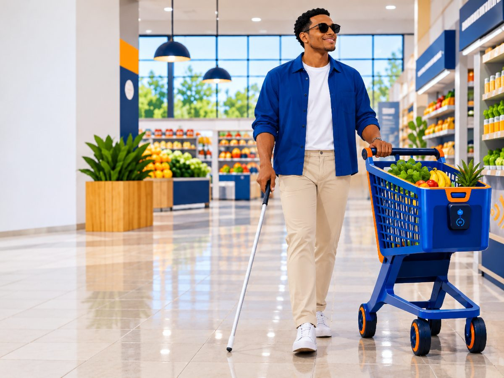

Ação
Investigação e planejamento
Os estudantes investigaram as dificuldades das compras e usaram localização, distância e direção para planejar trajetos.
Leia do seu jeito
Matemática Inclusiva é uma proposta de carrinho inteligente: localização, direção e distância viram instruções por áudio para ajudar pessoas com deficiência visual a circular no supermercado.

Exemplo de instrução: “Siga em frente. Hortifruti à sua direita.”
Quem tem deficiência visual pode ter dificuldade para localizar produtos e setores entre os corredores. As compras ficam mais demoradas e podem exigir ajuda de outras pessoas.
Um carrinho com orientação por áudio e localização dos produtos pode facilitar as compras: indica o caminho até o setor e avisa quando é hora de mudar de direção.
Componente curricular: Matemática, com tecnologia, acessibilidade e inclusão social.
A pessoa diz qual produto procura.
O carrinho encontra o setor no mapa do mercado.
Instruções curtas por áudio guiam o percurso: “siga em frente”, “vire à direita”.
Um aviso indica que o produto está por perto.
Possível evolução: sensores adequados também poderiam alertar sobre obstáculos.
Cada trajeto é uma sequência de trechos retos e curvas em um plano com coordenadas. Somando os trechos, descobrimos a distância percorrida.
Escolha um setor para ver o caminho.
Distância percorrida quadrados do mapa
A atividade aproximou conhecimentos matemáticos de uma necessidade real e mostrou como eles contribuem para a acessibilidade e a inclusão social.
Investigação e planejamento
Os estudantes investigaram as dificuldades das compras e usaram localização, distância e direção para planejar trajetos.
Acessibilidade e autonomia
Discutiram barreiras, clareza das informações, facilidade de uso e os limites da solução.
Estruturação da proposta
Organizaram o modelo do carrinho com raciocínio matemático, criatividade e colaboração.
O projeto reconhece a acessibilidade como condição para a participação social e estimula um olhar atento às necessidades de pessoas com deficiência visual.
Uma proposta conceitual, não uma solução validada. Para funcionar em um supermercado real, ela precisaria de desenvolvimento, avaliação de acessibilidade e testes com usuários, para medir segurança, precisão e facilidade de uso.
Matemática, criatividade e colaboração a serviço da participação social.